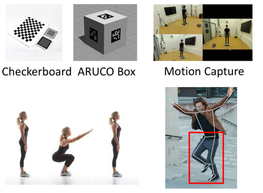
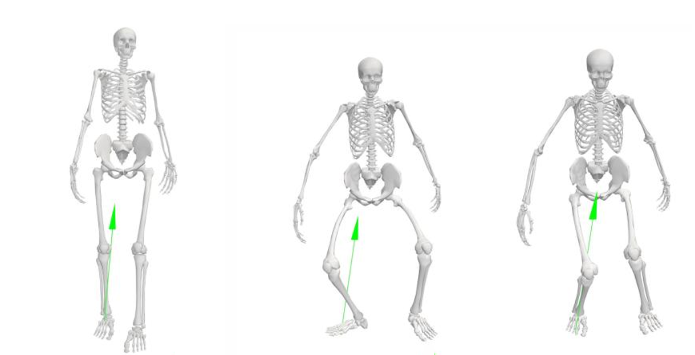
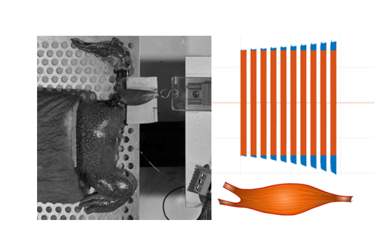
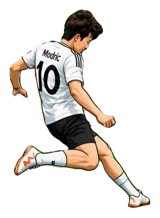

How does fatigue change the way we move?
I combine motion trajectories with physiological data to study fatigue and recovery over time.
I’m a mechanical engineering master’s student at the University of Tokyo. I study human movement with computer vision, wearable sensors, biomechanics, and machine learning.
My current research asks whether everyday video and physiological signals can estimate fatigue without interrupting training or recovery.
I combine motion trajectories with physiological data to study fatigue and recovery over time.
Python, PyTorch, OpenSim, Xsens, MATLAB, time-series analysis, and 3D reconstruction.
I care about careful validation, readable code, and results that make sense outside a benchmark.
Five projects across computer vision, biomechanics, control, and sports data.

I’m building a synchronized pipeline that reconstructs 3D motion from several cameras, cleans the trajectories, and combines them with physiological signals to estimate fatigue and recovery.

I built a custom calibration and OpenSim/OpenSense workflow to compare knee movement, moments, and muscle forces across three gait conditions.
A lightweight temporal model with supervised contrastive learning for 27 skeleton-based fitness actions.
I reproduced and compared four model families for predicting clear, win, and potted-ball outcomes.

I modeled the stimulation voltage needed to maintain a target force and compared the simulation with muscle experiments.
I started with mechanics in Dalian, spent a year at Tokyo Tech, and now study sports technology at the University of Tokyo.
M.S. Mechanical Engineering · Multimodal human fatigue prediction
Young Scientists Exchange Program · Muscle fatigue-aware inverse control
B.Eng. Mechanical Engineering · Excellent Graduation Thesis
Football, billiards, photography, guitar, cooking, and finding small details around Tokyo.

People, movement, and city light.
Playing, watching, and modeling shots.
Mostly fingerstyle, played slowly.
Trying, tasting, and adjusting.
If you’re working on human movement, sports technology, or an interesting data problem, I’d be happy to talk.
wangmingyang_career@outlook.com ↗